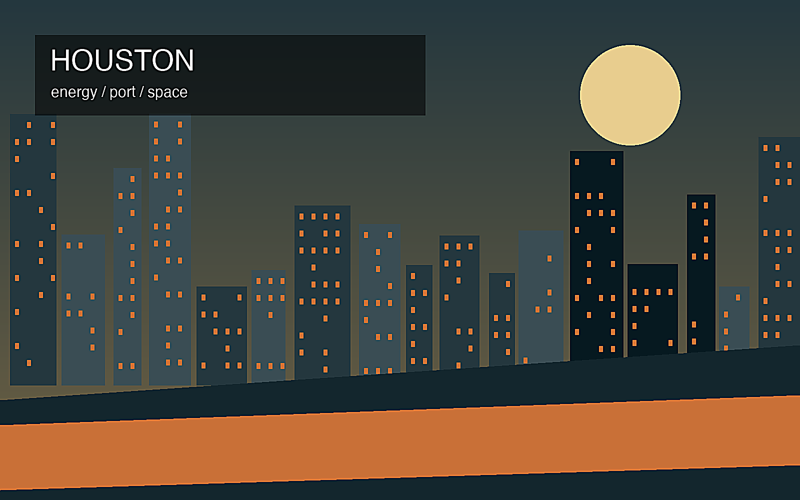
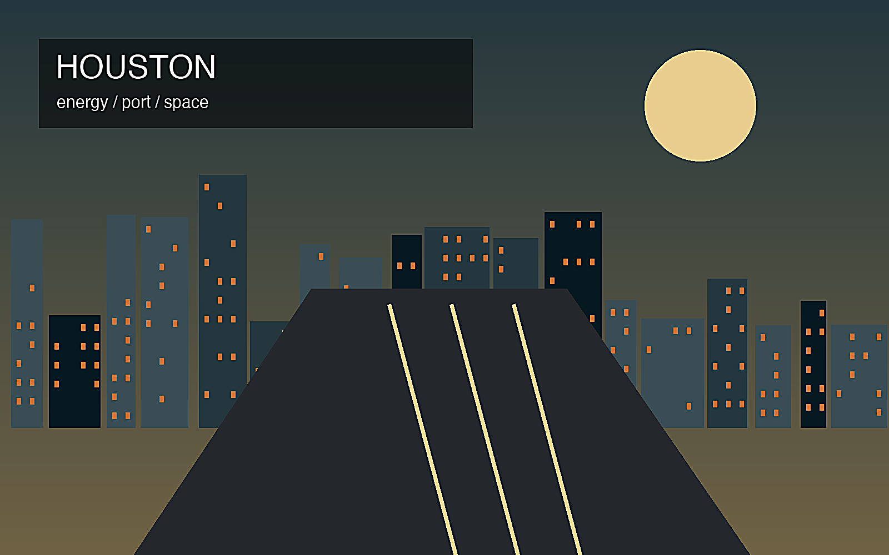

地政学
メキシコ湾岸に近く、港湾、水路、石油化学、宇宙産業、医療研究が広域に展開する。

🇺🇸 アメリカ合衆国 / 北米 / World City Atlas
エネルギーと港湾のメガリージョン。世界都市として、経済規模だけでなく、地理、産業、宗教文化、暮らし、観光を分けて読みます。
都市の骨格
メキシコ湾岸に近く、港湾、水路、石油化学、宇宙産業、医療研究が広域に展開する。

メキシコ湾岸に近く、港湾、水路、石油化学、宇宙産業、医療研究が広域に展開する。
石油・天然ガス、化学、港湾、NASA関連、医療センター、物流が都市経済を厚くする。
多民族移民都市で、教会、モスク、寺院、ラテン系・アジア系文化が郊外まで広がる。
車社会、広い郊外、博物館地区、宇宙センター、湾岸の産業景観が観光と生活を形作る。
Geography
都市の経済力は、地図上の位置、港湾、鉄道、空港、河川、周辺都市との関係から生まれます。
メキシコ湾岸に近く、港湾、水路、石油化学、宇宙産業、医療研究が広域に展開する。
ヒューストンを単体の市街地としてではなく、周辺の住宅地、産業地、物流施設、教育機関と接続した都市圏として見ると、GDPの大きさが日々の通勤、土地利用、観光、文化施設の配置にどう表れているかが分かります。
石油・天然ガス、化学、港湾、NASA関連、医療センター、物流が都市経済を厚くする。
この都市では、華やかな中心業務地区の背後に、清掃、建設、配送、調理、介護、教育、保守、警備といった日常的な労働があります。都市の経済規模を見るときは、数字だけでなく、その数字を支える人と場所を同時に見る必要があります。
Industry
主力産業だけでなく、周辺の小さな仕事が都市を毎日動かしています。
Culture
宗教施設、祭礼、市場、劇場、大学、移民地区は、都市の経済とは別の時間を保存します。
多民族移民都市で、教会、モスク、寺院、ラテン系・アジア系文化が郊外まで広がる。
車社会、広い郊外、博物館地区、宇宙センター、湾岸の産業景観が観光と生活を形作る。